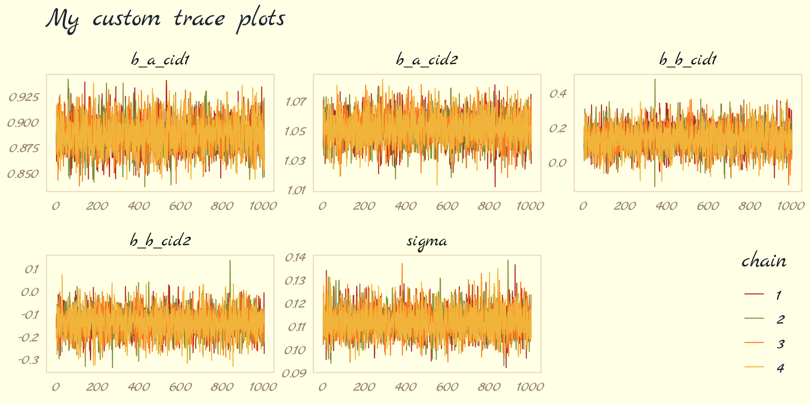
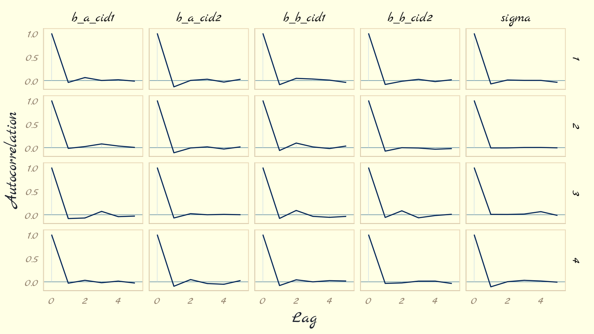
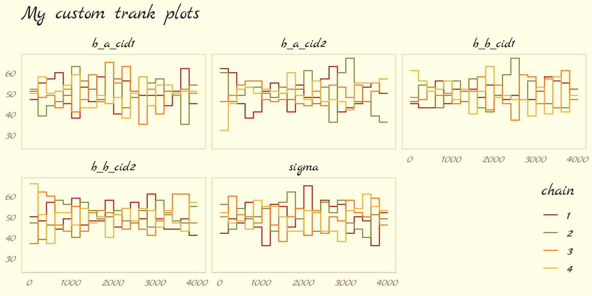
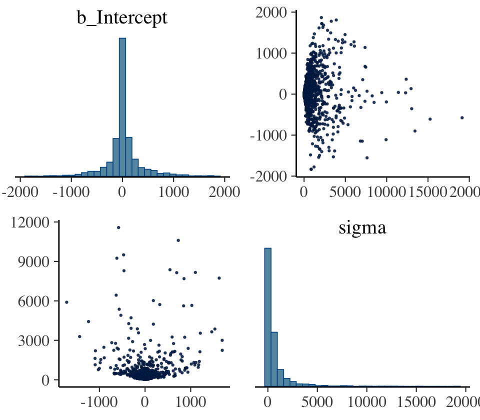

{kind=link}
{kind=link}
set.seed(9)
num_weeks <- 1e5
positions <- rep(0, num_weeks)
current <- 10
for (i in 1:num_weeks) {
# Record current position
positions[i] <- current
# Flip coin to generate proposal
proposal <- current + sample(c(-1, 1), size = 1)
# Now make sure he loops around the archipelago
if (proposal < 1) proposal <- 10
if (proposal > 10) proposal <- 1
# Move?
prob_move <- proposal / current
current <- ifelse(runif(1) < prob_move, proposal, current)
} 9 Markov Chain Monte Carlo
This chapter introduces one commonplace example of Fortuna and Minerva’s cooperation: the estimation of posterior probability distributions using a stochastic process known as Markov chain Monte Carlo (MCMC)” (McElreath, 2020, p. 263, emphasis in the original). Though we’ve been using MCMC via the brms package for chapters, now, this chapter should clarify some of the questions you might have about the details.
9.0.0.1 Rethinking: Stan was a man
The Stan programming language is not an abbreviation or acronym. Rather, it is named after Stanisław Ulam. Ulam is credited as one of the inventors of Markov chain Monte Carlo. Together with Ed Teller, Ulam applied it to designing fusion bombs. But he and others soon applied the general Monte Carlo method to diverse problems of less monstrous nature. Ulam made important contributions in pure mathematics, chaos theory, and molecular and theoretical biology, as well. (p. 264)
9.1 Good King Markov and his island kingdom
Here we simulate King Markov’s journey. In this version of the code, we’ve added set.seed(), which helps make the exact results reproducible.
In this chapter, we’ll take our plotting theme from the ggpomological package (Aden-Buie, 2022).
library(ggpomological)To get the full benefits from ggpomological, you may need to download some fonts. Throughout this chapter, I make extensive use of Marck Script, which you find at https://fonts.google.com/specimen/Marck+Script. Once you’ve installed the font on your computer, you may also have to execute extrafont::font_import(). Here we get a sense of the colors we’ll be using with our dots and lines and so on.
scales::show_col(ggpomological:::pomological_palette)This will make it easier to access those colors.
pomological_palette <- ggpomological:::pomological_paletteNow make Figure 9.2.a.
library(tidyverse)
tibble(week = 1:1e5,
island = positions) |>
ggplot(aes(x = week, y = island)) +
geom_point(color = pomological_palette[1], shape = 1) +
scale_x_continuous(breaks = seq(from = 0, to = 100, by = 20)) +
scale_y_continuous(breaks = seq(from = 0, to = 10, by = 2)) +
coord_cartesian(xlim = c(0, 100)) +
labs(title = "Behold the Metropolis algorithm in action!",
subtitle = "The dots show the king's path over the first 100 weeks.") +
theme_pomological_fancy(base_family = "Marck Script")
Figure 9.2.b.
tibble(week = 1:1e5,
island = positions) |>
mutate(island = factor(island)) |>
ggplot(aes(x = island)) +
geom_bar(fill = pomological_palette[2]) +
scale_y_continuous("number of weeks", expand = expansion(mult = c(0, 0.05))) +
labs(title = "Old Metropolis shines in the long run.",
subtitle = "Sure enough, the time the king spent on each island\nwas proportional to its population size.") +
theme_pomological_fancy(base_family = "Marck Script")
9.2 Metropolis algorithms
“The Metropolis algorithm is the grandparent of several different strategies for getting samples from unknown posterior distributions” (p. 267). If you’re interested, Robert & Casella (2011) wrote a good historical overview of MCMC.
9.2.1 Gibbs sampling
The Gibbs sampler (Casella & George, 1992; Geman & Geman, 1984) uses conjugate pairs (i.e., pairs of priors and likelihoods that have analytic solutions for the posterior of an individual parameter) to efficiently sample from the posterior. Gibbs was the workhorse algorithm during the rise of Bayesian computation in the 1990s and it was highlighted in Bayesian software like BUGS (Spiegelhalter et al., 2003) and JAGS (Plummer, 2003). We will not be using the Gibbs sampler in this project. It’s available for use in R. For an extensive applied introduction, check out Kruschke’s (2015) text.
9.2.2 High-dimensional problems
The Gibbs sampler is limited in that (a) you might not want to use conjugate priors and (b) it can be quite inefficient with complex hierarchical models, which we’ll be fitting soon.
Earlier versions of this ebook did not focus on McElreath’s example of the pathology high autocorrelations can create when using the Metropolis algorithm, which is depicted in Figure 9.3. However, James Henegan kindly reached out with a tidyverse workflow for reproducing this example. Here is a slightly amended version of that workflow.
The first step is to simulate a bivariate distribution “with a strong negative correlation of -0.9” (p. 268). Henagen simulated the from a distribution where the two variables \(\text a_1\) and \(\text a_2\) followed the bivariate normal distribution
\[\begin{align*} \begin{bmatrix} \text a_1 \\ \text a_2 \end{bmatrix} & \sim \operatorname{MVNormal} \left (\begin{bmatrix} 0 \\ 0 \end{bmatrix}, \mathbf \Sigma \right) \\ \mathbf \Sigma & = \mathbf{SRS} \\ \mathbf S & = \begin{bmatrix} 0.22 & 0 \\ 0 & 0.22 \end{bmatrix} \\ \mathbf R & = \begin{bmatrix} 1 & -.9 \\ -.9 & 1 \end{bmatrix}, \end{align*}\]
where the variance/covariance matrix is decomposed into a \(2 \times 2\) matrix of standard deviations and a \(2 \times 2\) correlation matrix. In this example, both variables (\(\text a_1\) and \(\text a_2\)) have standard deviations of 0.22. We’ll have more practice with data of this kind in Chapter 14. For now, just go with it. Here’s how to simulate from this distribution.
# Mean vector
mu <- c(0, 0)
# Variance/covariance matrix
sd_a1 <- 0.22
sd_a2 <- 0.22
rho <- -0.9
Sigma <- matrix(data = c(sd_a1^2,
rho * sd_a1 * sd_a2,
rho * sd_a1 * sd_a2,
sd_a2^2),
nrow = 2)
# Sample from the distribution with the `mvtnorm::rmvnorm()` function
set.seed(9)
my_samples <- mvtnorm::rmvnorm(n = 1000, mean = mu, sigma = Sigma)Check the sample correlation.
data.frame(my_samples) |>
set_names(str_c("a", 1:2)) |>
summarise(rho = cor(a1, a2)) rho
1 -0.9106559We won’t actually be using the values from this simulation. Instead, we can evaluate the density function for this distribution using the mvtnorm::dmvnorm() function. But even before that, we’ll want to create a grid of values for the contour lines in Figure 9.3. Here we do so with a custom function called x_y_grid().
# Define the function
x_y_grid <- function(x_start = -1.6,
x_stop = 1.6,
x_length = 100,
y_start = -1.6,
y_stop = 1.6,
y_length = 100) {
x_domain <- seq(from = x_start, to = x_stop, length.out = x_length)
y_domain <- seq(from = y_start, to = y_stop, length.out = y_length)
tidyr::expand_grid(a1 = x_domain, a2 = y_domain)
}
# Simulate
contour_plot_dat <- x_y_grid()
# What have we done?
str(contour_plot_dat)tibble [10,000 × 2] (S3: tbl_df/tbl/data.frame)
$ a1: num [1:10000] -1.6 -1.6 -1.6 -1.6 -1.6 -1.6 -1.6 -1.6 -1.6 -1.6 ...
$ a2: num [1:10000] -1.6 -1.57 -1.54 -1.5 -1.47 ...Now compute the density values for each combination of a1 and a2.
contour_plot_dat <- contour_plot_dat |>
mutate(d = mvtnorm::dmvnorm(as.matrix(contour_plot_dat), mean = mu, sigma = Sigma))
head(contour_plot_dat)# A tibble: 6 × 3
a1 a2 d
<dbl> <dbl> <dbl>
1 -1.6 -1.6 1.47e-229
2 -1.6 -1.57 6.08e-225
3 -1.6 -1.54 2.24e-220
4 -1.6 -1.50 7.38e-216
5 -1.6 -1.47 2.17e-211
6 -1.6 -1.44 5.68e-207To get a sense of what we’ve done, here are those data as a 2D density plot.
contour_plot_dat |>
ggplot(aes(x = a1, y = a2, fill = d)) +
geom_raster(interpolate = T) +
scale_x_continuous(expand = c(0, 0)) +
scale_y_continuous(expand = c(0, 0)) +
scale_fill_gradientn(colors = pomological_palette[c(8, 2, 4)],
limits = c(0, NA)) +
theme_pomological_fancy(base_family = "Marck Script")
But we don’t want a density plot. We want contour lines!
contour_plot <- contour_plot_dat |>
ggplot() +
geom_contour(aes(x = a1, y = a2, z = d),
breaks = 9^(-(10 * 1:25)),
color = pomological_palette[4], linewidth = 1/8) +
scale_x_continuous(expand = c(0, 0)) +
scale_y_continuous(expand = c(0, 0)) +
theme_pomological_fancy(base_family = "Marck Script")
contour_plot
Note how we saved that plot as contour_plot, which will serve as the base for the two panels in our Figure 9.3. Next we use the Metropolis algorithm to sample from the posterior defined, above. Henagen’s implementation is wrapped in a custom function he called metropolis(), which is designed to track
- coordinates of candidate (i.e., proposal) points, and
- whether or not the candidate points were accepted.
Here we define metropolis() with slight amendments to Henagen’s original.
metropolis <- function(num_proposals = 50,
step_size = 0.1,
starting_point = c(-1, 1)) {
# Initialize vectors where we will keep track of relevant
candidate_x_history <- rep(-Inf, num_proposals)
candidate_y_history <- rep(-Inf, num_proposals)
did_move_history <- rep(FALSE, num_proposals)
# Prepare to begin the algorithm...
current_point <- starting_point
for(i in 1:num_proposals) {
# "Proposals are generated by adding random Gaussian noise
# to each parameter"
noise <- rnorm(n = 2, mean = 0, sd = step_size)
candidate_point <- current_point + noise
# Store coordinates of the proposal point
candidate_x_history[i] <- candidate_point[1]
candidate_y_history[i] <- candidate_point[2]
# Evaluate the density of our posterior at the proposal point
candidate_prob <- mvtnorm::dmvnorm(candidate_point, mean = mu, sigma = Sigma)
# Evaluate the density of our posterior at the current point
current_prob <- mvtnorm::dmvnorm(current_point, mean = mu, sigma = Sigma)
# Decide whether or not we should move to the candidate point
acceptance_ratio <- candidate_prob / current_prob
should_move <- ifelse(runif(n = 1) < acceptance_ratio, TRUE, FALSE)
# Keep track of the decision
did_move_history[i] <- should_move
# Move if necessary
if(should_move) {
current_point <- candidate_point
}
}
# Once the loop is complete, store the relevant results in a tibble
results <- tibble::tibble(
candidate_x = candidate_x_history,
candidate_y = candidate_y_history,
accept = did_move_history
)
# Compute the "acceptance rate" by dividing the total number of "moves"
# by the total number of proposals
number_of_moves <- results |> dplyr::pull(accept) |> sum()
acceptance_rate <- number_of_moves/num_proposals
list(results = results, acceptance_rate = acceptance_rate)
}Run the algorithm for the panel on the left, which uses a step size of 0.1.
set.seed(9)
round_1 <- metropolis(num_proposals = 50,
step_size = 0.1,
starting_point = c(-1,1))Use round_1 to make Figure 9.3a.
p1 <- contour_plot +
geom_point(data = round_1$results,
aes(x = candidate_x, y = candidate_y,
color = accept, shape = accept)) +
scale_shape_manual(values = c(21, 19)) +
scale_color_manual(values = pomological_palette[8:9]) +
labs(x = "a1",
y = "a2",
subtitle = str_c("step size 0.1,\naccept rate ", round_1$acceptance_rate),) +
theme_pomological_fancy(base_family = "Marck Script")
p1
Now run the algorithm with step size set to 0.25. Then make Figure 9.3b, combine the two ggplots, and return the our full version of Figure 9.3.
# Simulate
set.seed(9)
round_2 <- metropolis(num_proposals = 50,
step_size = 0.25,
starting_point = c(-1, 1))
# Plot
p2 <- contour_plot +
geom_point(data = round_2$results,
aes(x = candidate_x, y = candidate_y,
color = accept, shape = accept)) +
scale_y_continuous(NULL, breaks = NULL, expand = c(0, 0)) +
scale_color_manual(values = pomological_palette[8:9]) +
scale_shape_manual(values = c(21, 19)) +
labs(x = "a1",
subtitle = str_c("step size 0.25,\naccept rate ", round_2$acceptance_rate)) +
theme_pomological_fancy(base_family = "Marck Script")
# Combine
library(patchwork)
(p1 + p2) +
plot_annotation(theme = theme_pomological_fancy(base_family = "Marck Script"),
title = "Metropolis chains under high correlation") +
plot_layout(guides = "collect")
Our acceptance rates differ from McElreath’s due to simulation variance. If you want to get a sense of stability in the acceptance rates, just simulate some more. For example, we might wrap metropolis() inside another function that takes a simulation seed value.
metropolis_with_seed <- function(seed, step_size = 0.1) {
set.seed(seed)
met <- metropolis(
num_proposals = 50,
step_size = step_size,
starting_point = c(-1, 1))
met$acceptance_rate
}Kick the tires and iterate 500 times.
ars <- tibble(seed = 1:500) |>
mutate(acceptance_rate = map_dbl(seed, metropolis_with_seed)) Now summarize the results in a histogram.
ars |>
ggplot(aes(x = acceptance_rate)) +
geom_histogram(binwidth = 0.025, fill = pomological_palette[5]) +
theme_pomological_fancy(base_family = "Marck Script")
If you iterate with step_size = 0.25, instead, the resulting histogram will look very different.
Now we turn our focus to Figure 9.4. McElreath threw us a bone and gave us the code in his R code 9.4. Here we’ll warp his code into a function called concentration_sim() which adds a seed argument for reproducibility.
concentration_sim <- function(d = 1, t = 1e3, seed = 9) {
set.seed(seed)
y <- rethinking::rmvnorm(t, rep(0, d), diag(d))
rad_dist <- function(y) sqrt(sum(y^2))
rd <- sapply(1:t, function(i) rad_dist( y[i, ]))
}Now run the simulation four times and plot.
d <- tibble(d = c(1, 10, 100, 1000)) |>
mutate(con = map(d, concentration_sim)) |>
unnest(con) |>
mutate(`# dimensions` = factor(d))
d |>
ggplot(aes(x = con, fill = `# dimensions`)) +
geom_density(linewidth = 0, alpha = 3/4) +
scale_fill_pomological() +
xlab("Radial distance from mode") +
theme_pomological_fancy(base_family = "Marck Script") +
theme(legend.position = c(0.7, 0.625))With high-dimensional posteriors,
sampled points are in a thin, high-dimensional shell very far from the mode. This shell can create very hard paths for a sampler to follow.
This is why we need MCMC algorithms that focus on the entire posterior at once, instead of one or a few dimensions at a time like Metropolis and Gibbs. Otherwise we get stuck in a narrow, highly curving region of parameter space. (p. 270)
9.3 Hamiltonian Monte Carlo
Hamiltonian Monte Carlo (HMC) is more computationally costly and more efficient than Gibbs at sampling from the posterior. It needs fewer samples, especially when fitting models with many parameters. To learn more about how HMC works, check out McElreath’s lecture on the topic from January 2019; his blog post, Markov chains: Why walk when you can flow?; or one of these lectures (here, here, or here) by Michael Betancourt.
9.3.1 Another parable
This section is beyond the scope of this project.
9.3.2 Particles in space
This section is beyond the scope of this project.
9.3.3 Limitations
As always, there are some limitations. HMC requires continuous parameters. It can’t glide through a discrete parameter. In practice, this means that certain techniques, like the imputation of discrete missing data, have to be done differently with HMC. HMC can certainly sample from such models, often much more efficiently than a Gibbs sampler could. But you have to change how you code them. (p. 278)
9.4 Easy HMC: ulam brm()
Much like McElreath’s rethinking package, brms provides a convenient interface to HMC via Stan. Other packages providing Stan interfaces include rstanarm (Brilleman et al., 2018; Gabry & Goodrich, 2022) and blavaan (Merkle et al., 2021, 2022; Merkle & Rosseel, 2018). I’m not aware of any up-to-date comparisons across the packages. If you’re ever inclined to make one, let the rest of us know!
Here we load the rugged data and brms.
library(brms)
data(rugged, package = "rethinking")
d <- rugged
rm(rugged)It takes just a sec to do a little data manipulation.
d <- d |>
mutate(log_gdp = log(rgdppc_2000))
dd <- d |>
drop_na(rgdppc_2000) |>
mutate(log_gdp_std = log_gdp / mean(log_gdp),
rugged_std = rugged / max(rugged),
cid = ifelse(cont_africa == 1, "1", "2")) |>
mutate(rugged_std_c = rugged_std - mean(rugged_std))In the context of this chapter, it doesn’t make sense to translate McElreath’s m8.3 quap() code to brm() code. Below, we’ll just go directly to the brm() variant of his m9.1.
9.4.1 Preparation
When working with brms, you don’t need to do the data processing McElreath did on page 280. If you wanted to, however, here’s how you might do it within the tidyverse.
dat_slim <- dd |>
mutate(cid = as.integer(cid)) |>
select(log_gdp_std, rugged_std, cid, rugged_std_c) |>
list()
str(dat_slim)9.4.2 Sampling from the posterior
Finally, we get to work that sweet HMC via brms::brm().
b9.1 <- brm(
data = dd,
family = gaussian,
bf(log_gdp_std ~ 0 + a + b * (rugged_std - 0.215),
a ~ 0 + cid,
b ~ 0 + cid,
nl = TRUE),
prior = c(prior(normal(1, 0.1), class = b, coef = cid1, nlpar = a),
prior(normal(1, 0.1), class = b, coef = cid2, nlpar = a),
prior(normal(0, 0.3), class = b, coef = cid1, nlpar = b),
prior(normal(0, 0.3), class = b, coef = cid2, nlpar = b),
prior(exponential(1), class = sigma)),
chains = 1, cores = 1,
seed = 9,
file = "fits/b09.01")This was another instance of the brms non-linear syntax, We’ve already introduced this in Section 4.4.2.1, Section 5.3.2, and Section 6.2.1. For even more details, you can always peruse Bürkner’s (2022) vignette, Estimating non-linear models with brms.
Here is a summary of the posterior.
print(b9.1) Family: gaussian
Links: mu = identity
Formula: log_gdp_std ~ 0 + a + b * (rugged_std - 0.215)
a ~ 0 + cid
b ~ 0 + cid
Data: dd (Number of observations: 170)
Draws: 1 chains, each with iter = 2000; warmup = 1000; thin = 1;
total post-warmup draws = 1000
Regression Coefficients:
Estimate Est.Error l-95% CI u-95% CI Rhat Bulk_ESS Tail_ESS
a_cid1 0.89 0.02 0.86 0.92 1.00 1456 506
a_cid2 1.05 0.01 1.03 1.07 1.00 1609 794
b_cid1 0.13 0.08 -0.02 0.29 1.00 1092 592
b_cid2 -0.14 0.06 -0.25 -0.02 1.00 1365 820
Further Distributional Parameters:
Estimate Est.Error l-95% CI u-95% CI Rhat Bulk_ESS Tail_ESS
sigma 0.11 0.01 0.10 0.12 1.00 1106 569
Draws were sampled using sampling(NUTS). For each parameter, Bulk_ESS
and Tail_ESS are effective sample size measures, and Rhat is the potential
scale reduction factor on split chains (at convergence, Rhat = 1).Unlike McElreath’s precis() output, our output has an Rhat instead of Rhat4. McElreath’s documentation indicated his Rhat4 values are based on the \(\widehat R\) from Gelman et al. (2013). To my knowledge, brms uses the same formula. McElreath also remarked he expected to update to an Rhat5 in the near future. I believe he was referencing Vehtari et al. (2019). I am under the impression this will be implemented at the level of the underlying Stan code, which means brms will get the update, too. To learn more, check out the New R-hat and ESS thread on the Stan Forums.
Also of note, McElreath’s rethinking::precis() returns highest posterior density intervals (HPDIs) when summarizing ulam() models. Not so with brms. If you want HPDIs, you might use the convenience functions from the tidybayes package. Here’s an example.
library(tidybayes)
post <- as_draws_df(b9.1)
post |>
pivot_longer(b_a_cid1:sigma) |>
group_by(name) |>
mean_hdi(value, .width = 0.89) # Note our rare use of 89% intervals# A tibble: 5 × 7
name value .lower .upper .width .point .interval
<chr> <dbl> <dbl> <dbl> <dbl> <chr> <chr>
1 b_a_cid1 0.887 0.858 0.910 0.89 mean hdi
2 b_a_cid2 1.05 1.04 1.07 0.89 mean hdi
3 b_b_cid1 0.130 0.00680 0.240 0.89 mean hdi
4 b_b_cid2 -0.142 -0.231 -0.0527 0.89 mean hdi
5 sigma 0.111 0.101 0.121 0.89 mean hdi There’s one more important difference in our brms summary output compared to McElreath’s rethinking::precis() output. In the text we learn precis() returns n_eff values for each parameter. Earlier versions of brms used to have a direct analogue named Eff.Sample. Both were estimates of the effective number of samples (a.k.a. the effective sample size) for each parameter. As with typical sample size, the more the merrier. Starting with version 2.10.0, brms now returns two columns: Bulk_ESS and Tail_ESS. These originate from the same Vehtari et al. (2019) paper that introduced the upcoming change to the \(\widehat R\). From the paper, we read:
If you plan to report quantile estimates or posterior intervals, we strongly suggest assessing the convergence of the chains for these quantiles. In Section 4.3 we show that convergence of Markov chains is not uniform across the parameter space and propose diagnostics and effective sample sizes specifically for extreme quantiles. This is different from the standard ESS estimate (which we refer to as the “bulk-ESS”), which mainly assesses how well the centre of the distribution is resolved. Instead, these “tail-ESS” measures allow the user to estimate the MCSE for interval estimates. (p. 5, emphasis in the original)
For more technical details, see the paper. In short, Bulk_ESS in the output from brms 2.10.0+ is what was previously referred to as Eff.Sample in earlier versions. It’s also what corresponds to what McElreath calls n_eff. This indexed the number of effective samples in ‘the center of the’ posterior distribution (i.e., the posterior mean or median). But since we also care about uncertainty in our parameters, we care about stability in the 95% intervals and such. The new Tail_ESS in brms output allows us to gauge the effective sample size for those intervals.
9.4.3 Sampling again, in parallel
You can easily parallelize those chains… They can all run at the same time, instead of in sequence. So as long as your computer has four cores (it probably does), it won’t take longer to run four chains than one chain. To run four independent Markov chains for the model above, and to distribute them across separate cores in your computer, just increase the number of chains and add a cores argument. (p. 281)
If you don’t know how many cores you have on your computer, you can always check with the parallel::detectCores() function. My current laptop has 12.
parallel::detectCores()[1] 12Here we sample from four HMC chains in parallel by adding cores = 4.
b9.1b <- update(
b9.1,
chains = 4, cores = 4,
seed = 9,
file = "fits/b09.01b")This model sampled so fast that it really didn’t matter if we sampled in parallel or not. It will for others.
print(b9.1b) Family: gaussian
Links: mu = identity
Formula: log_gdp_std ~ 0 + a + b * (rugged_std - 0.215)
a ~ 0 + cid
b ~ 0 + cid
Data: dd (Number of observations: 170)
Draws: 4 chains, each with iter = 2000; warmup = 1000; thin = 1;
total post-warmup draws = 4000
Regression Coefficients:
Estimate Est.Error l-95% CI u-95% CI Rhat Bulk_ESS Tail_ESS
a_cid1 0.89 0.02 0.85 0.92 1.00 5156 2758
a_cid2 1.05 0.01 1.03 1.07 1.00 5249 2359
b_cid1 0.13 0.08 -0.02 0.28 1.00 5097 2952
b_cid2 -0.14 0.06 -0.25 -0.03 1.00 5448 3167
Further Distributional Parameters:
Estimate Est.Error l-95% CI u-95% CI Rhat Bulk_ESS Tail_ESS
sigma 0.11 0.01 0.10 0.12 1.00 4368 2998
Draws were sampled using sampling(NUTS). For each parameter, Bulk_ESS
and Tail_ESS are effective sample size measures, and Rhat is the potential
scale reduction factor on split chains (at convergence, Rhat = 1).The show() function does not work for brms models the same way it does with those from rethinking. Rather, show() returns the same information we’d get from print() or summary().
show(b9.1b) Family: gaussian
Links: mu = identity
Formula: log_gdp_std ~ 0 + a + b * (rugged_std - 0.215)
a ~ 0 + cid
b ~ 0 + cid
Data: dd (Number of observations: 170)
Draws: 4 chains, each with iter = 2000; warmup = 1000; thin = 1;
total post-warmup draws = 4000
Regression Coefficients:
Estimate Est.Error l-95% CI u-95% CI Rhat Bulk_ESS Tail_ESS
a_cid1 0.89 0.02 0.85 0.92 1.00 5156 2758
a_cid2 1.05 0.01 1.03 1.07 1.00 5249 2359
b_cid1 0.13 0.08 -0.02 0.28 1.00 5097 2952
b_cid2 -0.14 0.06 -0.25 -0.03 1.00 5448 3167
Further Distributional Parameters:
Estimate Est.Error l-95% CI u-95% CI Rhat Bulk_ESS Tail_ESS
sigma 0.11 0.01 0.10 0.12 1.00 4368 2998
Draws were sampled using sampling(NUTS). For each parameter, Bulk_ESS
and Tail_ESS are effective sample size measures, and Rhat is the potential
scale reduction factor on split chains (at convergence, Rhat = 1).You can get a focused look at the formula and prior information from a brms fit object by subsetting them directly.
b9.1b$formulalog_gdp_std ~ 0 + a + b * (rugged_std - 0.215)
a ~ 0 + cid
b ~ 0 + cidb9.1b$prior prior class coef group resp dpar nlpar lb ub tag source
(flat) b a default
normal(1, 0.1) b cid1 a user
normal(1, 0.1) b cid2 a user
(flat) b b default
normal(0, 0.3) b cid1 b user
normal(0, 0.3) b cid2 b user
exponential(1) sigma 0 userYou can get that information on the model priors with the prior_summary() function.
prior_summary(b9.1b) prior class coef group resp dpar nlpar lb ub tag source
(flat) b a default
normal(1, 0.1) b cid1 a user
normal(1, 0.1) b cid2 a user
(flat) b b default
normal(0, 0.3) b cid1 b user
normal(0, 0.3) b cid2 b user
exponential(1) sigma 0 userI am not aware of a convenient way to pull the information on how long each chain ran for. As to the sample size, our output is a little different than McElreath’s. The brms default is to run 4 chains, each containing 2,000 total samples, the first 1,000 of which are warmups. Since we used those defaults, we ended up with \((2{,}000 - 1{,}000) \times 4 = 4{,}000\) post-warmup HMC samples. But anyways, just like all of McElreath’s n_eff values were above 2,000, most of our Bulk_ESS values were above 4,000, which is
no mistake. The adaptive sampler that Stan uses is so good, it can actually produce sequential samples that are better than uncorrelated. They are anti-correlated. This means it can explore the posterior distribution so efficiently that it can beat random. (p. 282)
In addition to sampling HMC chains in parallel, the Stan team have been working on within-chain parallelization, too. This is a new development and was just made available to brms users with the release of brms version 2.14.0. I don’t plan on covering within-chain parallelization in this ebook, but you can learn more in Weber and Bürkner’s (2022) vignette, Running brms models with within-chain parallelization, or Weber’s guest post on Gelman’s blog, Stan’s within-chain parallelization now available with brms. If you have some large rough model that’s taking hours upon hours to fit, it might be worth your while.
9.4.4 Visualization
As with McElreath’s rethinking, brms allows users to put the fit object directly into the pairs() function.
pairs(b9.1b,
off_diag_args = list(size = 1/5, alpha = 1/5))
Our output is a little different in that we don’t get a lower-triangle of Pearson’s correlation coefficients. If you’d like those values, use vcov().
vcov(b9.1b, correlation = T) |> round(digits = 2) a_cid1 a_cid2 b_cid1 b_cid2
a_cid1 1.00 0.02 0.20 0.00
a_cid2 0.02 1.00 0.00 -0.08
b_cid1 0.20 0.00 1.00 0.02
b_cid2 0.00 -0.08 0.02 1.00Note, however, that this will only return the correlations among the ‘Population-Level Effects’. Within brms, \(\sigma\) is classified among the ‘Family Specific Parameters’. We have more options still. As a first step, use the brms::as_draws_df() function to extract the posterior samples within a data frame.
post <- as_draws_df(b9.1b)
glimpse(post)Rows: 4,000
Columns: 10
$ b_a_cid1 <dbl> 0.8902290, 0.8859746, 0.8851561, 0.8624812, 0.8817271, 0.8715740, 0.8808950, 0.8952688, 0.8829123, 0.9007783,…
$ b_a_cid2 <dbl> 1.041682, 1.037597, 1.057069, 1.029111, 1.051701, 1.046893, 1.051390, 1.055610, 1.064900, 1.041198, 1.049531,…
$ b_b_cid1 <dbl> 0.193352390, 0.172975339, 0.060368098, 0.005113573, 0.242495092, 0.090044745, 0.012027168, 0.221261151, 0.068…
$ b_b_cid2 <dbl> -0.212097650, -0.211968344, -0.158824208, -0.078588554, -0.225123754, -0.079836101, -0.133941767, -0.14647897…
$ sigma <dbl> 0.1180972, 0.1163596, 0.1063421, 0.1156475, 0.1071916, 0.1111975, 0.1167769, 0.1038341, 0.1111960, 0.1130315,…
$ lprior <dbl> 2.072297, 2.084396, 2.248335, 2.199314, 1.788850, 2.211099, 2.278767, 2.139294, 2.196891, 2.106575, 2.245404,…
$ lp__ <dbl> 132.5012, 132.4970, 133.8521, 129.7689, 132.2144, 133.5621, 133.0054, 133.2437, 133.3786, 132.4297, 131.4722,…
$ .chain <int> 1, 1, 1, 1, 1, 1, 1, 1, 1, 1, 1, 1, 1, 1, 1, 1, 1, 1, 1, 1, 1, 1, 1, 1, 1, 1, 1, 1, 1, 1, 1, 1, 1, 1, 1, 1, 1…
$ .iteration <int> 1, 2, 3, 4, 5, 6, 7, 8, 9, 10, 11, 12, 13, 14, 15, 16, 17, 18, 19, 20, 21, 22, 23, 24, 25, 26, 27, 28, 29, 30…
$ .draw <int> 1, 2, 3, 4, 5, 6, 7, 8, 9, 10, 11, 12, 13, 14, 15, 16, 17, 18, 19, 20, 21, 22, 23, 24, 25, 26, 27, 28, 29, 30…Another nice way to customize your pairs plot is with the GGally package. For this approach, you feed the post data into the ggpairs() function.
library(GGally)
post |>
select(b_a_cid1:sigma) |>
ggpairs()Now we get the pairs plot on the lower triangle and the Pearson’s correlation coefficients in the upper. Since GGally::ggpairs() returns a ggplot2 object, you can customize it as you please.
# Make the custom functions
my_diag <- function(data, mapping, ...) {
ggplot(data = data, mapping = mapping) +
geom_density(fill = pomological_palette[7],
color = pomological_palette[6])
}
my_upper <- function(data, mapping, ...) {
ggplot(data = data, mapping = mapping) +
geom_bin2d() +
scale_fill_gradient(low = pomological_palette[4],
high = pomological_palette[1])
}
# plot!
post |>
select(b_a_cid1:sigma) |>
ggpairs(lower = list(continuous = wrap("cor", family = "Marck Script", color = "black")),
diag = list(continuous = my_diag),
upper = list(continuous = my_upper)) +
labs(subtitle = "My custom pairs plot") +
theme_pomological_fancy(base_family = "Marck Script")
For more ideas on customizing a ggpairs() plot, go here.
9.4.5 Checking the chain
Using plot() for a brm() fit returns both density and trace lots for the parameters.
plot(b9.1b, widths = c(1, 2))
The bayesplot package allows a little more control. Here, we use the bayesplot::mcmc_trace() function to show only trace plots with our custom theme. Note that mcmc_trace() does not work with brmfit objects, but it will accept input from as_draws_df().
library(bayesplot)
as_draws_df(b9.1b) |>
mcmc_trace(pars = vars(b_a_cid1:sigma),
facet_args = list(ncol = 3),
linewidth = 0.15) +
scale_color_pomological() +
labs(title = "My custom trace plots") +
theme_pomological_fancy(base_family = "Marck Script") +
theme(legend.position = c(0.95, 0.2))
The bayesplot package offers a variety of diagnostic plots. Here we make autocorrelation plots for all model parameters, one for each HMC chain.
as_draws_df(b9.1b) |>
mcmc_acf(pars = vars(b_a_cid1:sigma), lags = 5) +
theme_pomological_fancy(base_family = "Marck Script") 
That’s just what we like to see–nice L-shaped autocorrelation plots. Those are the kinds of shapes you’d expect when you have reasonably large effective samples.
Before we move on, there’s an important difference between the trace plots McElreath showed in the text and the ones we just made. McElreath’s trace plots include the warmup iterations. Ours did not. To my knowledge, neither the brms::plot() nor the bayesplot::mcmc_trace() functions support including warmups in their trace plots. One quick way to get them is with the ggmcmc package (Fernández i Marín, 2016, 2021).
library(ggmcmc)The ggmcmc package has a variety of convenience functions for working with MCMC chains. The ggs() function extracts the posterior draws, including warmup, and arranges them in a tidy tibble. Just make sure to set inc_warmup = TRUE.
ggs(b9.1b, inc_warmup = TRUE) |>
str()tibble [48,000 × 4] (S3: tbl_df/tbl/data.frame)
$ Iteration: int [1:48000] 1 2 3 4 5 6 7 8 9 10 ...
$ Chain : int [1:48000] 1 1 1 1 1 1 1 1 1 1 ...
$ Parameter: Factor w/ 6 levels "b_a_cid1","b_a_cid2",..: 1 1 1 1 1 1 1 1 1 1 ...
$ value : num [1:48000] 1.04 1.04 1.04 1.04 1.04 ...
- attr(*, "nChains")= int 4
- attr(*, "nParameters")= int 6
- attr(*, "nIterations")= int 2000
- attr(*, "nBurnin")= num 0
- attr(*, "nThin")= num 1
- attr(*, "description")= chr "anon_model"With this in hand, we can now include those warmup draws in our trace plots. Here’s how to do so without convenience functions like bayesplot::mcmc_trace().
ggs(b9.1b, inc_warmup = TRUE) |>
mutate(chain = factor(Chain)) |>
ggplot(aes(x = Iteration, y = value)) +
# This marks off the warmups
annotate(geom = "rect",
xmin = 0, xmax = 1000, ymin = -Inf, ymax = Inf,
fill = pomological_palette[9], alpha = 1/6, linewidth = 0) +
geom_line(aes(color = chain),
linewidth = 0.15) +
scale_color_pomological() +
labs(x = NULL, y = NULL,
title = "My custom trace plots with warmups via ggmcmc::ggs()") +
theme_pomological_fancy(base_family = "Marck Script") +
facet_wrap(~ Parameter, scales = "free_y") +
theme(legend.position = c(0.95, 0.225))
Following brms defaults, we won’t include warmup iterations in the trace plots for other models in this book. A nice thing about plots that do contain them, though, is they reveal how quickly our HMC chains transition away from their start values into the posterior. To get a better sense of this, let’s make those trace plots once more, but this time zooming in on the first 50 iterations.
ggs(b9.1b, inc_warmup = TRUE) |>
mutate(chain = factor(Chain)) |>
ggplot(aes(x = Iteration, y = value, color = chain)) +
annotate(geom = "rect",
xmin = 0, xmax = 1000, ymin = -Inf, ymax = Inf,
fill = pomological_palette[9], alpha = 1/6, linewidth = 0) +
geom_line(linewidth = 0.5) +
scale_color_pomological() +
labs(x = NULL, y = NULL,
title = "Another custom trace plots with warmups via ggmcmc::ggs()") +
coord_cartesian(xlim = c(1, 50)) +
theme_pomological_fancy(base_family = "Marck Script") +
facet_wrap(~ Parameter, scales = "free_y") +
theme(legend.position = c(0.95, 0.225))
For each parameter, the all four chains had moved away from their starting values to converge on the marginal posteriors by the 30th iteration or so.
But anyway, we’ve veered a bit from the text. McElreath pointed out a second way to visualize the chains is by the distribution of the ranked samples, which he called a trank plot (short for trace rank plot). I’m not aware that brms has a built-in function for that. Happily, we can make them with mcmc_rank_overlay().
as_draws_df(b9.1b) |>
mcmc_rank_overlay(pars = vars(b_a_cid1:sigma)) +
scale_color_pomological() +
labs(x = NULL,
title = "My custom trank plots") +
coord_cartesian(ylim = c(25, NA)) +
theme_pomological_fancy(base_family = "Marck Script") +
theme(legend.position = c(0.95, 0.2))
What this means is to take all the samples for each individual parameter and rank them. The lowest sample gets rank 1. The largest gets the maximum rank (the number of samples across all chains). Then we draw a histogram of these ranks for each individual chain. Why do this? Because if the chains are exploring the same space efficiently, the histograms should be similar to one another and largely overlapping.
…The horizontal is rank, from 1 to the number of samples across all chains (2000 in this example). The vertical axis is the frequency of ranks in each bin of the histogram. This trank plot is what we hope for: Histograms that overlap and stay within the same range. (pp. 284–285)
9.4.5.1 Overthinking: Raw Stan model code
The stancode() function works with brms much like it does with rethinking.
brms::stancode(b9.1b)// generated with brms 2.23.0
functions {
}
data {
int<lower=1> N; // total number of observations
vector[N] Y; // response variable
int<lower=1> K_a; // number of population-level effects
matrix[N, K_a] X_a; // population-level design matrix
int<lower=1> K_b; // number of population-level effects
matrix[N, K_b] X_b; // population-level design matrix
// covariates for non-linear functions
vector[N] C_1;
int prior_only; // should the likelihood be ignored?
}
transformed data {
}
parameters {
vector[K_a] b_a; // regression coefficients
vector[K_b] b_b; // regression coefficients
real<lower=0> sigma; // dispersion parameter
}
transformed parameters {
// prior contributions to the log posterior
real lprior = 0;
lprior += normal_lpdf(b_a[1] | 1, 0.1);
lprior += normal_lpdf(b_a[2] | 1, 0.1);
lprior += normal_lpdf(b_b[1] | 0, 0.3);
lprior += normal_lpdf(b_b[2] | 0, 0.3);
lprior += exponential_lpdf(sigma | 1);
}
model {
// likelihood including constants
if (!prior_only) {
// initialize linear predictor term
vector[N] nlp_a = rep_vector(0.0, N);
// initialize linear predictor term
vector[N] nlp_b = rep_vector(0.0, N);
// initialize non-linear predictor term
vector[N] mu;
nlp_a += X_a * b_a;
nlp_b += X_b * b_b;
for (n in 1:N) {
// compute non-linear predictor values
mu[n] = (0 + nlp_a[n] + nlp_b[n] * (C_1[n] - 0.215));
}
target += normal_lpdf(Y | mu, sigma);
}
// priors including constants
target += lprior;
}
generated quantities {
}You can also get that information by executing b9.1b$model or b9.1b$fit@stanmodel. We will explore very little raw Stan code in this ebook. However, if you would like to learn more about Stan code, I’ve written a short blog series on the Stan code underlying simple brms models, the first post of which you can find here. In addition, this book has a sister ebook Kurz (2024), in which I translated McElreath’s second edition into rstan code. You can find that ebook here.
9.5 Care and feeding of your Markov chain
Markov chain Monte Carlo is a highly technical and usually automated procedure. You might write your own MCMC code, for the sake of learning. But it is very easy to introduce subtle biases. A package like Stan, in contrast, is continuously tested against expected output. Most people who use Stan don’t really understand what it is doing, under the hood. That’s okay. Science requires division of labor, and if every one of us had to write our own Markov chains from scratch, a lot less research would get done in the aggregate. (p. 287)
If you do want to learn more about HMC, McElreath has some nice introductory lectures on the topic (see here and here). To dive even deeper, Michael Betancourt from the Stan team has given many lectures on the topic (e.g., here and here).
9.5.1 How many samples do you need?
The brms defaults are iter = 2000 and warmup = 1000, which are twice the number as in McElreath’s rethinking package.
If all you want are posterior means, it doesn’t take many samples at all to get very good estimates. Even a couple hundred samples will do. But if you care about the exact shape in the extreme tails of the posterior, the 99th percentile or so, then you’ll need many more. So there is no universally useful number of samples to aim for. In most typical regression applications, you can get a very good estimate of the posterior mean with as few as 200 effective samples. And if the posterior is approximately Gaussian, then all you need in addition is a good estimate of the variance, which can be had with one order of magnitude more, in most cases. For highly skewed posteriors, you’ll have to think more about which region of the distribution interests you. Stan will sometimes warn you about “tail ESS,” the effective sample size (similar to
n_eff) in the tails of the posterior. In those cases, it is nervous about the quality of extreme intervals, like 95%. Sampling more usually helps. (pp. 287-288)
And remember, with changes from brms version 2.10.0, we now have both Bulk_ESS and Tail_ESS to consult when thinking about the effective sample size. What McElreath referred to as n_eff is what we now think of as Bulk_ESS when using brms. When McElreath referred to the “tail ESS” in the end of that block quote, that’s our brms Tail_ESS number.
9.5.1.1 Rethinking: Warmup is not burn-in
Other MCMC algorithms and software often discuss burn-in….
But Stan’s sampling algorithms use a different approach. What Stan does during warmup is quite different from what it does after warmup. The warmup samples are used to adapt sampling, to find good values for the step size and the number of steps. Warmup samples are not representative of the target posterior distribution, no matter how long warmup continues. They are not burning in, but rather more like cycling the motor to heat things up and get ready for sampling. When real sampling begins, the samples will be immediately from the target distribution, assuming adaptation was successful. (p. 288)
9.5.2 How many chains do you need?
It is very common to run more than one Markov chain, when estimating a single model. To do this with [brms], the
chainsargument specifies the number of independent Markov chains to sample from. And the optionalcoresargument lets you distribute the chains across different processors, so they can run simultaneously, rather than sequentially….for typical regression models, you can live by the motto one short chain to debug, four chains for verification and inference. (pp. 288–289, emphasis in the original)
9.5.2.1 Rethinking: Convergence diagnostics
We’ve already covered how brms has expanded the traditional notion of effective samples (i.e., n_eff) to Bulk_ESS and Tail_ESS. Times are changing for the \(\widehat R\), too. However, it turns out the Stan team has found some deficiencies with the \(\widehat R\), for which they’ve made recommendations that will be implemented in the Stan ecosystem sometime soon (see here for a related thread on the Stan Forums). In the meantime, you can read all about it in Vehtari et al. (2019) and in one of Dan Simpson’s blog posts.
For more on these topics, you might also check out Gabry and Modrák’s (2022) vignette, Visual MCMC diagnostics using the bayesplot package.
9.5.3 Taming a wild chain
As with rethinking, brms can take data in the form of a list. Recall however, that in order to specify starting values, you need to specify a list of lists with an inits argument rather than with start.
b9.2 <- brm(
data = list(y = c(-1, 1)),
family = gaussian,
y ~ 1,
prior = c(prior(normal(0, 1000), class = Intercept),
prior(exponential(0.0001), class = sigma)),
iter = 2000, warmup = 1000, chains = 3,
seed = 9,
file = "fits/b09.02")Let’s peek at the summary.
print(b9.2)Warning: There were 246 divergent transitions after warmup. Increasing adapt_delta above 0.8 may help. See
http://mc-stan.org/misc/warnings.html#divergent-transitions-after-warmup Family: gaussian
Links: mu = identity
Formula: y ~ 1
Data: list(y = c(-1, 1)) (Number of observations: 2)
Draws: 3 chains, each with iter = 2000; warmup = 1000; thin = 1;
total post-warmup draws = 3000
Regression Coefficients:
Estimate Est.Error l-95% CI u-95% CI Rhat Bulk_ESS Tail_ESS
Intercept 12.34 382.85 -803.54 985.42 1.03 300 306
Further Distributional Parameters:
Estimate Est.Error l-95% CI u-95% CI Rhat Bulk_ESS Tail_ESS
sigma 678.66 1291.29 12.02 3680.62 1.05 83 42
Draws were sampled using sampling(NUTS). For each parameter, Bulk_ESS
and Tail_ESS are effective sample size measures, and Rhat is the potential
scale reduction factor on split chains (at convergence, Rhat = 1).Much like in the text, this summary is a disaster. Note the warning about divergent transitions. The brms::nuts_params() function allows use to pull a wealth of diagnostic information for the chains from a brms fit. The different kinds of diagnostics are listed in the Parameter column.
nuts_params(b9.2) |>
distinct(Parameter) Parameter
1 accept_stat__
2 stepsize__
3 treedepth__
4 n_leapfrog__
5 divergent__
6 energy__Our interest is for when Parameter == "divergent__".
nuts_params(b9.2) |>
filter(Parameter == "divergent__") |>
count(Value) Value n
1 0 2754
2 1 246This indicates that among the 3,000 post-warmup draws, 393 were classified as divergent transitions. We can use the np argument within brms::pairs() to include this information in the pairs() plot.
pairs(b9.2,
# Currently not working with bayesplot 1.10.0+.
# See https://github.com/stan-dev/bayesplot/issues/298
# np = nuts_params(b9.2),
off_diag_args = list(size = 1/4))
That np = nuts_params(b9.2) trick will work in a similar way with bayesplot functions like mcmc_pairs() and mcmc_trace(). The red x marks show us where the divergent transitions are within the bivariate posterior. To my eye, the pattern in this plot isn’t very strong. Sometimes the pattern of divergent transitions can give you clear clues about where the problems are in the model.
Let’s further inspect the damage by making the top two rows of Figure 9.9.
p1 <- as_draws_df(b9.2) |>
mcmc_trace(pars = vars(b_Intercept:sigma),
linewidth = 0.25)
p2 <- as_draws_df(b9.2) |>
mcmc_rank_overlay(pars = vars(b_Intercept:sigma))
(
(p1 / p2) &
scale_color_pomological() &
theme_pomological_fancy(base_family = "Marck Script") &
theme(legend.position = "none")
) +
plot_annotation(subtitle = "These chains are not healthy")Okay, that’s enough disaster. Let’s try a model that adds just a little information by way of weakly-regularizing priors:
\[\begin{align*} y_i & \sim \operatorname{Normal}(\mu, \sigma) \\ \mu & = \alpha \\ \alpha & \sim \operatorname{Normal}(1, 10) \\ \sigma & \sim \operatorname{Exponential}(1). \end{align*}\]
Watch our new priors save the day.
b9.3 <- brm(
data = list(y = c(-1, 1)),
family = gaussian,
y ~ 1,
prior = c(prior(normal(1, 10), class = Intercept),
prior(exponential(1), class = sigma)),
iter = 2000, warmup = 1000, chains = 3,
seed = 9,
file = "fits/b09.03")print(b9.3) Family: gaussian
Links: mu = identity
Formula: y ~ 1
Data: list(y = c(-1, 1)) (Number of observations: 2)
Draws: 3 chains, each with iter = 2000; warmup = 1000; thin = 1;
total post-warmup draws = 3000
Regression Coefficients:
Estimate Est.Error l-95% CI u-95% CI Rhat Bulk_ESS Tail_ESS
Intercept 0.04 1.20 -2.45 2.49 1.00 1155 779
Further Distributional Parameters:
Estimate Est.Error l-95% CI u-95% CI Rhat Bulk_ESS Tail_ESS
sigma 1.53 0.79 0.59 3.66 1.00 786 1255
Draws were sampled using sampling(NUTS). For each parameter, Bulk_ESS
and Tail_ESS are effective sample size measures, and Rhat is the potential
scale reduction factor on split chains (at convergence, Rhat = 1).As in the text, no more warning signs and no more silly estimates. The trace and trank plots look better, too.
p1 <- as_draws_df(b9.3) |>
mcmc_trace(pars = vars(b_Intercept:sigma),
linewidth = 0.25)
p2 <- as_draws_df(b9.3) |>
mcmc_rank_overlay(pars = vars(b_Intercept:sigma)) +
ylim(35, NA)
(
(p1 / p2) &
scale_color_pomological() &
theme_pomological_fancy(base_family = "Marck Script") &
theme(legend.position = "none")
) +
plot_annotation(subtitle = "Weakly informative priors cleared up the condition right away")
Now behold our version of Figure 9.10.
post <- as_draws_df(b9.3)
# Left
p1 <- post |>
select(b_Intercept) |>
ggplot(aes(x = b_Intercept)) +
geom_density(trim = T) +
geom_line(data = tibble(x = seq(from = -15, to = 15, length.out = 50)),
aes(x = x, y = dnorm(x = x, mean = 0, sd = 10)),
color = pomological_palette[5], linetype = 2) +
xlab(expression(alpha))
# Right
p2 <- post |>
select(sigma) |>
ggplot(aes(x = sigma)) +
geom_density(trim = T) +
geom_line(data = tibble(x = seq(from = 0, to = 10, length.out = 50)),
aes(x = x, y = dexp(x = x, rate = 1)),
color = pomological_palette[9], linetype = 2) +
labs(x = expression(sigma),
y = NULL) +
coord_cartesian(xlim = c(0, 10),
ylim = c(0, 0.7))
# Combine
(
(p1 + p2) &
theme_pomological_fancy(base_family = "Marck Script")
) + plot_annotation(subtitle = "Prior (dashed) and posterior (solid) distributions for the\nmodel with weakly-informative priors, b9.3")
These weakly informative priors have helped by providing a very gentle nudge towards reasonable values of the parameters. Now values like 30 million are no longer equally plausible as small values like 1 or 2. Lots of problematic chains want subtle priors like these, designed to tune estimation by assuming a tiny bit of prior information about each parameter. And even though the priors end up getting washed out right away–two observations were enough here–they still have a big effect on inference, by allowing us to get an answer. (pp. 292–293)
9.5.3.1 Rethinking: The folk theorem of statistical computing
The example above illustrates Andrew Gelman’s folk theorem of statistical computing: When you have computational problems, often there’s a problem with your model. Before we begin to tune the software and pour more computer power into a problem, it can be useful to go over the model specification again, and the data itself, to make sure the problem isn’t in the pre-sampling stage. (p. 293)
9.5.3.2 Overthinking: Divergent transitions are your friend
You’ll see divergent transition warnings often in using [
brms::brm()] and Stan. They are your friend, providing a helpful warning. These warnings arise when the numerical simulation that HMC uses is inaccurate. HMC can detect these inaccuracies. That is one of its major advantages over other sampling approaches, most of which provide few automatic ways to discover bad chains. (p. 293)
This is an issue that comes up frequently on the Stan Forums (here’s a link to the brms section). It’s a good idea to take divergent transitions seriously. Reaching out to others in the community is a great way to get guidance. But before you start a new post, make sure you look through the previous threads to keep from posting redundant questions.
9.5.4 Non-identifiable parameters
It appears that the only way to get a brms version of McElreath’s m9.4 and m9.5 is to augment the data. In addition to the Gaussian y vector, we’ll add two constants to the data, intercept_1 = 1 and intercept_2 = 1.
set.seed(9)
y <- rnorm(100, mean = 0, sd = 1)b9.4 <- brm(
data = list(y = y,
a1 = 1,
a2 = 1),
family = gaussian,
y ~ 0 + a1 + a2,
prior = c(prior(normal(0, 1000), class = b),
prior(exponential(1), class = sigma)),
iter = 2000, warmup = 1000, chains = 3,
seed = 9,
file = "fits/b09.04")Our model results don’t perfectly mirror McElreath’s, but they’re identical in spirit.
print(b9.4)Warning: Parts of the model have not converged (some Rhats are > 1.05). Be careful when analysing the results! We recommend
running more iterations and/or setting stronger priors. Family: gaussian
Links: mu = identity
Formula: y ~ 0 + a1 + a2
Data: list(y = y, a1 = 1, a2 = 1) (Number of observations: 100)
Draws: 3 chains, each with iter = 2000; warmup = 1000; thin = 1;
total post-warmup draws = 3000
Regression Coefficients:
Estimate Est.Error l-95% CI u-95% CI Rhat Bulk_ESS Tail_ESS
a1 -27.88 400.74 -844.83 535.32 1.78 5 18
a2 27.83 400.74 -535.37 844.83 1.78 5 18
Further Distributional Parameters:
Estimate Est.Error l-95% CI u-95% CI Rhat Bulk_ESS Tail_ESS
sigma 0.99 0.07 0.85 1.12 1.19 11 51
Draws were sampled using sampling(NUTS). For each parameter, Bulk_ESS
and Tail_ESS are effective sample size measures, and Rhat is the potential
scale reduction factor on split chains (at convergence, Rhat = 1).Note the frightening warning message. Those results are a mess! Let’s try again.
b9.5 <- brm(
data = list(y = y,
a1 = 1,
a2 = 1),
family = gaussian,
y ~ 0 + a1 + a2,
prior = c(prior(normal(0, 10), class = b),
prior(exponential(1), class = sigma)),
iter = 2000, warmup = 1000, chains = 3,
seed = 9,
file = "fits/b09.05")print(b9.5) Family: gaussian
Links: mu = identity
Formula: y ~ 0 + a1 + a2
Data: list(y = y, a1 = 1, a2 = 1) (Number of observations: 100)
Draws: 3 chains, each with iter = 2000; warmup = 1000; thin = 1;
total post-warmup draws = 3000
Regression Coefficients:
Estimate Est.Error l-95% CI u-95% CI Rhat Bulk_ESS Tail_ESS
a1 0.19 7.08 -13.40 13.96 1.00 768 1002
a2 -0.24 7.08 -14.06 13.32 1.00 769 1055
Further Distributional Parameters:
Estimate Est.Error l-95% CI u-95% CI Rhat Bulk_ESS Tail_ESS
sigma 0.97 0.07 0.85 1.11 1.00 982 960
Draws were sampled using sampling(NUTS). For each parameter, Bulk_ESS
and Tail_ESS are effective sample size measures, and Rhat is the potential
scale reduction factor on split chains (at convergence, Rhat = 1).“The estimates for a1 and a2 are better identified now. Well, they still aren’t individually identified. But their sum is identified” (p. 296). Now it’s time to make our version of Figure 9.11. Before we do, one of the challenges we’ll have to overcome is the bayesplot::mcmc_rank_overlay() doesn’t seem to give users an easy way to control the faceting behavior of the plotting function. If you try to simultaneously plot all three model parameters with mcmc_rank_overlay(), you’ll end up with the one row and three columns. But I want the reverse. One solution is to make a custom plotting function. Since we’re juggling both mcmc_trace() and mcmc_rank_overlay(), we’ll make the function do both at once. The trick will be to set the function and workflow up so that we only enter in one parameter at a time. Here’s the function.
trace_rank <- function(data, var, subtitle = NULL, ymin = NA) {
p1 <- data |>
mcmc_trace(pars = var,
linewidth = 0.25,
facet_args = list(ncol = 1)) +
labs(y = NULL,
subtitle = subtitle) +
facet_wrap(~ parameter)
p2 <- data |>
mcmc_rank_overlay(pars = var) +
coord_cartesian(ylim = c(ymin, NA)) +
xlab(NULL)
p1 + p2
}Now use our custom trace_rank() function to make the six rows one at a time and then combine them with a little patchwork at the end to make our version of Figure 9.11.
# `b9.4`
post <- as_draws_df(b9.4)
p1 <- trace_rank(data = post, var = "b_a1", subtitle = "b9.4 (bad priors)")
p2 <- trace_rank(data = post, var = "b_a2")
p3 <- trace_rank(data = post, var = "sigma")
# `b9.5`
post <- as_draws_df(b9.5)
p4 <- trace_rank(data = post, var = "b_a1", subtitle = "b9.5 (good priors)", ymin = 30)
p5 <- trace_rank(data = post, var = "b_a2", ymin = 30)
p6 <- trace_rank(data = post, var = "sigma", ymin = 30)
# Combine!
(p1 / p2 / p3 / p4 / p5 / p6) &
scale_color_pomological() &
theme_pomological_fancy(base_family = "Marck Script") &
theme(legend.position = "none")
The central message in the text, default to weakly-regularizing priors, holds for brms just as it does for rethinking. For more on the topic, see the recommendations from the Stan team. If you want to dive deeper, check out Simpson’s post on Gelman’s blog, (It’s never a) total eclipse of the prior and their corresponding (2017) paper with Betancourt, The prior can often only be understood in the context of the likelihood.
Session info
sessionInfo()R version 4.5.1 (2025-06-13)
Platform: aarch64-apple-darwin20
Running under: macOS Ventura 13.4
Matrix products: default
BLAS: /Library/Frameworks/R.framework/Versions/4.5-arm64/Resources/lib/libRblas.0.dylib
LAPACK: /Library/Frameworks/R.framework/Versions/4.5-arm64/Resources/lib/libRlapack.dylib; LAPACK version 3.12.1
locale:
[1] en_US.UTF-8/en_US.UTF-8/en_US.UTF-8/C/en_US.UTF-8/en_US.UTF-8
time zone: America/Chicago
tzcode source: internal
attached base packages:
[1] stats graphics grDevices utils datasets methods base
other attached packages:
[1] ggmcmc_1.5.1.2 bayesplot_1.15.0.9000 GGally_2.4.0 tidybayes_3.0.7 brms_2.23.0
[6] Rcpp_1.1.0 patchwork_1.3.2 lubridate_1.9.4 forcats_1.0.1 stringr_1.6.0
[11] dplyr_1.1.4 purrr_1.2.1 readr_2.1.5 tidyr_1.3.2 tibble_3.3.1
[16] tidyverse_2.0.0 ggpomological_0.1.2 ggplot2_4.0.1
loaded via a namespace (and not attached):
[1] svUnit_1.0.8 tidyselect_1.2.1 farver_2.1.2 loo_2.9.0.9000 S7_0.2.1
[6] fastmap_1.2.0 TH.data_1.1-4 tensorA_0.36.2.1 digest_0.6.39 timechange_0.3.0
[11] estimability_1.5.1 lifecycle_1.0.5 StanHeaders_2.36.0.9000 survival_3.8-3 processx_3.8.6
[16] magrittr_2.0.4 posterior_1.6.1.9000 compiler_4.5.1 rlang_1.1.7 tools_4.5.1
[21] utf8_1.2.6 yaml_2.3.12 knitr_1.51 labeling_0.4.3 bridgesampling_1.2-1
[26] htmlwidgets_1.6.4 curl_7.0.0 pkgbuild_1.4.8 plyr_1.8.9 RColorBrewer_1.1-3
[31] cmdstanr_0.9.0 abind_1.4-8 multcomp_1.4-29 withr_3.0.2 grid_4.5.1
[36] stats4_4.5.1 inline_0.3.21 xtable_1.8-4 extrafontdb_1.1 emmeans_1.11.2-8
[41] scales_1.4.0 rethinking_2.42 MASS_7.3-65 isoband_0.3.0 cli_3.6.5
[46] mvtnorm_1.3-3 rmarkdown_2.30 generics_0.1.4 RcppParallel_5.1.11-1 rstudioapi_0.17.1
[51] reshape2_1.4.5 tzdb_0.5.0 rstan_2.36.0.9000 splines_4.5.1 parallel_4.5.1
[56] matrixStats_1.5.0 vctrs_0.7.0 V8_8.0.1 Matrix_1.7-3 sandwich_3.1-1
[61] jsonlite_2.0.0 arrayhelpers_1.1-0 hms_1.1.4 ggdist_3.3.3 glue_1.8.0
[66] ggstats_0.11.0 codetools_0.2-20 ps_1.9.1 distributional_0.5.0 stringi_1.8.7
[71] shape_1.4.6.1 gtable_0.3.6 QuickJSR_1.8.1 extrafont_0.20 pillar_1.11.1
[76] htmltools_0.5.9 Brobdingnag_1.2-9 R6_2.6.1 evaluate_1.0.5 lattice_0.22-7
[81] backports_1.5.0 rstantools_2.5.0.9000 gridExtra_2.3 coda_0.19-4.1 nlme_3.1-168
[86] Rttf2pt1_1.3.14 checkmate_2.3.3 xfun_0.55 zoo_1.8-14 pkgconfig_2.0.3
Comments